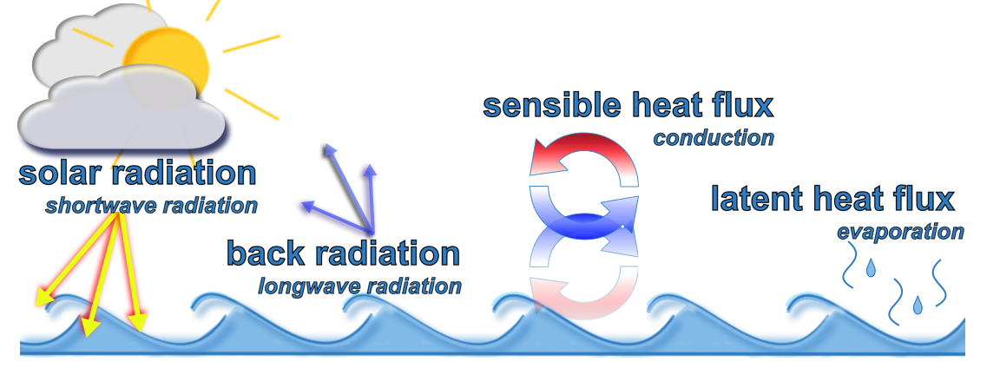
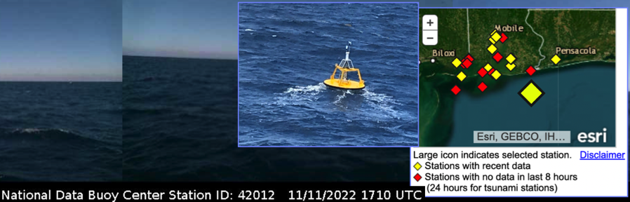
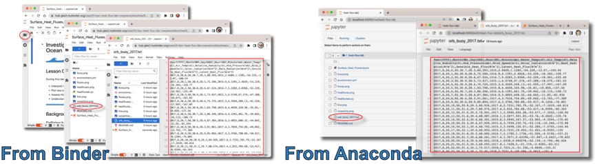
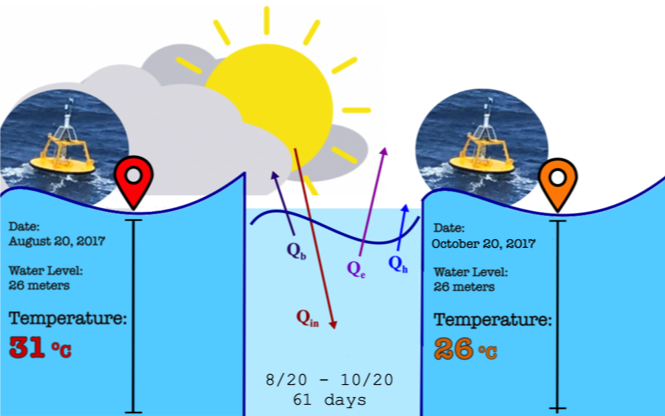

Lab 8:Investigating Surface Heat Fluxes in the Coastal Ocean#
Lesson Objectives#
During this lab, you will learn how to
Interpret relationships between oceanic and atmospheric data
Plot sea surface temperature and heat fluxes
Assess the importance of the surface heat fluxes in an ocean temperature budget
Understand the impact of different environmental conditions in bulk heat flux formulas
To run the lab interactively, click the Binder button below:

An Introduction to Heat Fluxes#
In this section, we define heat flux, discuss the different heat flux components, and introduce the concept of a bulk formula to estimate total heat flux.
Defining the heat flux terms#
Heat flux is the flow of energy through a surface over a period of time. Ocean surface heat flux is a critical component of Earth’s climate system. The impact of global warming due to anthropogenic pollution has had a disproportionately large effect on the world’s oceans; it has been estimated that ~90% of the warming has been absorbed by the oceans. Nearly all oceanic heating is driven by air-sea interaction where incoming solar energy warms the upper ocean and outgoing heat loss cools it. The primary processes that lead to heat loss through the ocean surface are longwave radiation (or ‘back radiation’), latent heat flux, and sensible heat flux.
Anything that has a temperature emits electromagnetic radiation. High temperature sources like the sun emit shortwave radiation, while cooler temperature sources like the ocean give off longwave radiation. When long-wave radiation is emitted from the ocean, it releases heat.
Latent heat flux is an energy exchange that occurs between the ocean and atmosphere when water changes state. Water evaporates from the ocean surface, becoming water vapor in the atmosphere. This can be thought of as the ocean ‘sweating’. Humans sweat to cool down (i.e., water evaporates off our skin removing heat from our body) and so does the ocean. As water changes from liquid to vapor, a tremendous amount of energy is released across the air-sea interface.
Sensible heat flux is heat exchange by conduction. When two objects with different temperatures are put in contact with each other, heat flows from the hotter object to the colder one. Since the water is typically warmer than the ambient air, heat energy is transferred from the ocean to the atmosphere.
 Figure 1. Fluxes
Bulk formula for total heat flux#
Taking direct measurements of heat fluxes in the ocean can be very challenging. Imagine attempting to take careful measurements of evaporated seawater while being rocked around by winds, storms, and waves! Scientists have addressed this hurdle by developing algorithms, called bulk formulas, to serve as proxies in lieu of direct measurements. A bulk formula roughly captures the intended processes based on environmental properties that are much easier to measure, such as temperature, wind speed, and humidity. There is a wealth of data, collected from many platforms in and around the ocean, that can provide the necessary elements for calculating heat fluxes.
The total heat flux between the ocean and the atmosphere can be estimated by the bulk formula
where
Term |
Definition |
Unit |
|---|---|---|
\(Q_t\) |
total heat flux |
W/m\(^2\) |
\(Q_{in}\) |
incoming solar radiation |
W/m\(^2\) |
\(Q_b\) |
long-wave back radiation |
W/m\(^2\) |
\(Q_h\) |
sensible heat flux |
W/m\(^2\) |
\(Q_e\) |
latent heat flux, (\(e\) for evaporation) |
W/m\(^2\) |
In this lab, we will use the bulk formula to estimate heat fluxes using data from Orange Beach, AL.
Interpreting Surface Temperature Data#
In this section, you will examine the data file, load and process the data, and create a time series plot of sea surface temperature.
Time series measurements taken from the Orange Beach buoy#
The data used in this lab was collected by a NOAA buoy in the Gulf of Mexico that is just offshore of Orange Beach, AL. The data can be viewed in real-time at the NOAA National Buoy Data Center (NBDC): https://www.ndbc.noaa.gov/station_page.php?station=42012 (Fig. 1). The instrumentation on this buoy collects a range of meteorological parameters including those needed for calculating the latent and sensible heat fluxes. The buoy collects data at 2 meters below the surface, which is approximated as the surface of the water column. The depth of the water column at this location is 26 meters.
Incoming solar radiation and outgoing long-wave radiation are a bit more difficult to determine and the values are generally taken from a ‘reanalysis dataset’. Reanalysis datasets are created by combining observations with numerical modeling outputs. This lab uses data from the North American Regional Reanalysis (NARR) from National Center for Environmental Prediction (NCEP) (https://psl.noaa.gov/data/gridded/data.narr.html). The buoy data and the NARR reanalysis data can be used to understand aspects of the complex relationship between water temperature and air-sea interactions.
 Fig. 2 ESRI map, photo of and photos taken from NOAA Buoy #42012 Orange Beach – 44 nm southeast of Mobile, AL. Image courtesy of NOAA.
Look at the data file#
The data used for this lab is called orb_buoy_2017.txt, located in the data directory.
Before using Python to load the file, open it and take a look.  If you are using Binder, click the folder icon in the left hand panel to show a directory listing. Find data/orb_buoy_2017.txt, and click on it to open the file and view the contents. If you used Anaconda to launch the Jupyter Notebook, it will have opened web browser displays you file directory. You would have found and clicked on the Surface_Heat_Fluxes.ipynb to run this notebook. Go to the tab listing the files, find data/orb_buoy_2017.txt, and click on it to view the contents.
Examine the file to check the following:
Which variables does the file contain and what are the associated units?
When did data collection begin? When did it end?
How often were the measurements made? (What is the time difference between measurements?)
Load the Python libraries and functions#
All of the functions used in this lab are in a file called heatfluxlab.py, located in the same directory as this notebook. Each of the functions are also defined at the end of the notebook, so you can easily look at or modify them.
Run the next cell to import these libraries and functions.
#Import functions for the lab
from heatfluxlab import *
Read in the file and check the contents#
In the next cell, readfile reads a file called filename, which must be a text file in comma separated value (CSV) format and stores the data in a dataframe called df. Using checkdata will display the column headers and first five rows of the dataset.
#Name of the file
filename = "data/orb_buoy_2017.txt"
#Load the data
df = readfile(filename)
#Check the contents
checkdata(df)
| Year(YYYY) | Month(MM) | Day(DDD) | Hour(HH) | Minute(mm) | Water_Temp(oC) | Air_Temp(oC) | Relative_Humidity(%) | Atm_Pressure(mb) | Wind_Speed(m/s) | Solar_radiation(W/m^2) | Back_Radiation(W/m^2) | Sensible_Heat_Flux(W/m^2) | Latent_Heat_Flux(W/m^2) | |
|---|---|---|---|---|---|---|---|---|---|---|---|---|---|---|
| 0 | 2017 | 8 | 20 | 0 | 50 | 30.7 | 28.3 | 80.393 | 1015.0 | 2.9409 | 1.1285 | -54.229 | -12.070 | -100.54 |
| 1 | 2017 | 8 | 20 | 1 | 50 | 30.9 | 28.5 | 75.286 | 1014.9 | 4.1391 | 2.4826 | -53.229 | -16.383 | -158.77 |
| 2 | 2017 | 8 | 20 | 2 | 50 | 30.8 | 28.6 | 67.524 | 1014.7 | 5.2283 | 3.8368 | -52.229 | -18.961 | -235.49 |
| 3 | 2017 | 8 | 20 | 3 | 50 | 30.9 | 28.5 | 73.937 | 1015.1 | 4.5748 | 97.2740 | -47.288 | -18.075 | -181.03 |
| 4 | 2017 | 8 | 20 | 4 | 50 | 30.9 | 28.4 | 75.725 | 1015.3 | 4.3569 | 209.1300 | -41.559 | -17.997 | -167.09 |
Using the data#
Data is referenced by column name as df['Column Name']. Check this by printing the values of water temperature, df['Water_Temp(oC)']. The output is limited to the first and last five values in the column.
df['Water_Temp(oC)']
0 30.7
1 30.9
2 30.8
3 30.9
4 30.9
...
1459 26.4
1460 26.3
1461 26.3
1462 26.3
1463 26.3
Name: Water_Temp(oC), Length: 1464, dtype: float64
Contents and column names#
The column names in our dataset are very descriptive, containing the physical quantity and the units; however, they are not terribly convienient to work with and do not follow standard naming conventions. We will rename the columns.
When working with dataframes, columns are often renamed either for convenience or by necessity.
For convenience: To simplify coding, choose names that are meaningful and conventional while being as short as possible.
For necessity: Check the documentation for the functions you are using. Date/time objects generally have a convention of year, month, day, hour, minute, second. Mapping tools may recognize a wide variety of lat/lon conventions, but they usually require consistency across datasets.
The data is summarized in the table below, including the original column name, the physical quantity, its units, and the new name we will assign it.
Original Name |
Measurement |
Units |
New Name |
|---|---|---|---|
Water_Temp(oC) |
water temperature at sea surface |
\(^{\circ}\)C |
sst |
Air_Temp(oC) |
air temperature |
\(^{\circ}\)C |
Ta |
Relative_Humidity(%) |
relative humidity |
% |
RH |
Atm_Pressure(mb) |
atmospheric pressure |
mb (millibars) |
atm |
Wind_Speed(m/s) |
wind speed |
m/s |
Vm |
Solar_radiation(W/m^2) |
incoming solar radiation |
W/m\(^2\) |
Qin |
Back_Radiation(W/m^2) |
back (long-wave) radiation |
W/m\(^2\) |
Qb |
Sensible_Heat_Flux(W/m^2) |
sensible heat flux |
W/m\(^2\) |
Qh |
Latent_Heat_Flux(W/m^2) |
latent heat flux |
W/m\(^2\) |
Qe |
In order to perform time operations correctly, we must reformat the date components into a timestamp. Proper column names for creating a timestamp include: year, month, day, hour, minute.
In order to complete the lab without modifying any code, use the following:
names = ['year','month','day','hour','minute','sst','Ta','RH','atm','Vm','Qin','Qb','Qh','Qe']
Rename the columns with rnamecols, and check the data again to confirm the renaming was successful.
#Create a list with new names for each column
names = ['year','month','day','hour','minute','sst','Ta','RH','atm','Vm','Qin','Qb','Qh','Qe']
#Rename the columns of the dataframe
renamecols(df,names)
#Confirm the renaming was successful
checkdata(df)
| year | month | day | hour | minute | sst | Ta | RH | atm | Vm | Qin | Qb | Qh | Qe | |
|---|---|---|---|---|---|---|---|---|---|---|---|---|---|---|
| 0 | 2017 | 8 | 20 | 0 | 50 | 30.7 | 28.3 | 80.393 | 1015.0 | 2.9409 | 1.1285 | -54.229 | -12.070 | -100.54 |
| 1 | 2017 | 8 | 20 | 1 | 50 | 30.9 | 28.5 | 75.286 | 1014.9 | 4.1391 | 2.4826 | -53.229 | -16.383 | -158.77 |
| 2 | 2017 | 8 | 20 | 2 | 50 | 30.8 | 28.6 | 67.524 | 1014.7 | 5.2283 | 3.8368 | -52.229 | -18.961 | -235.49 |
| 3 | 2017 | 8 | 20 | 3 | 50 | 30.9 | 28.5 | 73.937 | 1015.1 | 4.5748 | 97.2740 | -47.288 | -18.075 | -181.03 |
| 4 | 2017 | 8 | 20 | 4 | 50 | 30.9 | 28.4 | 75.725 | 1015.3 | 4.3569 | 209.1300 | -41.559 | -17.997 | -167.09 |
Create a time object#
Function maketimestamp takes the dataset and a list of time components, and it returns a time series. Show the period of time for which we have data by using checktimerange, and show the first five timestamps.
#Make a list of all time variables
timevars = ['year','month','day','hour','minute']
#Create the time variable
Time = maketimestamp(df, timevars)
#Check what time period is covered in the dataset.
checktimerange(Time)
#Print the first 5 values
checkdata(Time)
Data collected from Aug 20, 2017 to Oct 19, 2017
0 2017-08-20 00:50:00
1 2017-08-20 01:50:00
2 2017-08-20 02:50:00
3 2017-08-20 03:50:00
4 2017-08-20 04:50:00
dtype: datetime64[ns]
Plot a time series of sea surface temperature#
The function single_timeplot (timevar, yvar, title, ylabel, color) makes a single timeseries plot, and the arguments are:
timevar- The time variableyvar- Time dependent variabletitle- Main title shown over the plotylabel- Y-axis label, left of the plot, also used for the legend titlecolor- Color of the plotted line
Plot the sea surface temperature (SST) vs time.
#Make a timeseries plot of SST
single_timeplot(Time,df['sst'],'Sea Surface Temperature ($^{\circ}$C)', 'SST', 'darkred')
Discussion questions#
Use the plot of SST to answer the following:
What is the temperature range over the time period?
Locate major periods of decreasing temperature. Approximately which day did each period begin?
What might have caused these cooling periods?
Did any hurricanes pass through the Gulf of Mexico during this time period? Do any look coincident with changes in the temperature structure?
#### 1. What is the temperature range over the time period?
#### 2. Locate major periods of decreasing temperature. Approximately which day did each period begin?
#### 3. What might have caused these cooling periods?
#### 4. Did any hurricanes pass through the Gulf of Mexico during this time period? Do any look coincident with changes in the temperature structure?
Finding Patterns in Heat Flux Data#
Recall that heat flux is the flow of energy through a surface over a period of time. The total heat flux is the summation of all components representing heat loss or heat gain. Incoming solar radiation acts as a heat gain term, while back radiation (long-wave) radiation, latent heat flux, and sensible heat flux act as heat loss terms.
In this section, we will plot the components of total heat flux.
Incoming solar radiation#
Incoming solar radiation (\(Q{in}\)), our first heat flux term, causes the ocean to gain heat. To examine the heat flux term \(Q{in}\), do the following:
Define a variable
Qinthat contains the incoming solar radiation.Create a plot showing
Qinvstime.
#Make a timeseries plot of Qin
single_timeplot(Time,df['Qin'],'Incoming Solar Radiation (W/m2)', 'Qin', 'darkred')

Back radiation, sensible heat flux, and latent heat flux#
Back radiation (\(Q_b\)), sensible heat flux (\(Q_h\)), latent heat flux (\(Q_e\)) generally cause the ocean to lose heat.
To examine all heat flux terms along with the sea surface temperature, use the function plotfluxtemp(Time,df).
#Plots Solar Radiation, Heat Fluxes, and Sea Surface Temperature
#Note, the variables must all exist in df, and must be named as expected
plotfluxtemp(Time,df)
Discussion questions#
Use the plots of the heat flux terms to answer the following:
What is the range of values for the incoming solar radiation (\(Q_{in}\)) and what is the dominant pattern in this time series?
What is causing this pattern?
Why is there variability in the peaks?
Note that there is a subtle long-term trend over the two month period, with a ~100 W/m\(^{2}\) decline in the peaks. Why is this happening? (Hint: Think about how the time series goes from August to October.)
How do the loss terms differ from the gain term? Please include differences in direction (positive or negative), magnitude, and patterns.
Qualitatively, what is the strongest heat loss term?
Compare the latent heat flux (\(Q_e\)) with the SST plot. Are there any relationships that you see? Is this what you would expect?
#### 1. What is the range of values for the incoming solar radiation ($Q_{in}$) and what is the dominant pattern in this time series?
#### 2. What is causing this pattern?
#### 3. Why is there variability in the peaks?
#### 4. Note that there is a subtle long-term trend over the two month period, with a ~100 W/m$^{2}$ decline in the peaks. Why is this happening? *Hint think about how the time series goes from August to October
#### 5. How do the loss terms differ from the gain term? Please include differences in direction (positive or negative), magnitude, and patterns.
#### 6. Qualitatively, what is the strongest heat loss term?
#### 7. Compare the latent heat flux ($Q_e$) with the SST plot. Are there any relationships that you see? Is this what you would expect?
Determine Relative Importance of Terms in a Heat Budget#
We have gained a qualitative sense of the relative strengths of heat flux terms using the plots for visual comparison. In this section, we quantify the relative strengths by calculating the average value for each term over the period of time.
Calculate the average value for flux terms#
Define a new variable Qloss that contains the total heat loss at every point in time.
Define a new variable Qt that contains the total heat flux at every point in time.
Calculate the average of \(Q_{in}\), \(Q_b\), \(Q_h\), \(Q_e\) rounded to the nearest integer:
To calculate the mean average of all values in the column of a dataframe, do
df['column_name'].mean().To round a value to the nearest integer, use
round(value).
then sum the terms to calculate:
Total average heat gain,
mean_gainTotal average heat loss,
mean_lossTotal average heat flux,
mean_total
#Average of individual heat flux terms
Qloss = df['Qb']+df['Qh']+df['Qe']
Qt = Qloss + df['Qin']
#Average of individual heat flux terms
Qin_mean = df['Qin'].mean()
Qb_mean = df['Qb'].mean()
Qh_mean = df['Qh'].mean()
Qe_mean = df['Qe'].mean()
#Total averages of gain or loss terms
mean_gain = Qin_mean
mean_loss = Qb_mean+Qh_mean+Qe_mean
mean_total = mean_gain + mean_loss
#Print a summary of the results
print("Heat Gain:")
print(" Total average heat gain was",round(mean_gain,1),"W/m2\n")
print("Heat Loss:")
print(" Average heat loss terms are Back Radiation:",round(Qb_mean,1),"W/m2, Sensible Heat:",
round(Qh_mean,1),"W/m2, Latent Heat:",round(Qe_mean,1),"W/m2")
print(" Total average heat loss was",round(mean_loss,1),"W/m2\n")
print("Total:")
print(" Total average heat flux is",round(mean_total,1),"W/m2\n")
Heat Gain:
Total average heat gain was 203.1 W/m2
Heat Loss:
Average heat loss terms are Back Radiation: -44.6 W/m2, Sensible Heat: -18.7 W/m2, Latent Heat: -168.7 W/m2
Total average heat loss was -231.9 W/m2
Total:
Total average heat flux is -28.8 W/m2
Discussion questions#
What is the relative strength of each of the heat flux terms?
Based on these mean values would you expect the water column to be gaining or losing heat? Explain.
Are your findings consistent with the water temperature data?
#### 1. What is the relative strength of each of the heat flux terms?
#### 2. Based on these mean values would you expect the water column to be gaining or losing heat? Explain.
#### 3. Are your findings consistent with the water temperature data?
Determine the Expected Temperature Change from Surface Heat Fluxes#
In this section, we solve the heat transfer equation to compare the theoretical calculation for temperature with our measured data.
Equation for total heat flux#
When an object changes temperature, it will transfer heat. The amount of heat depends on the mass of the object. Think about holding a mug of hot cocoa on a winter day. As your cocoa cools to match the surrounding air temperature, it releases heat which warms your hands. Now think about sitting next to an outdoor hot tub on that same winter day. The cocoa and the hottub may start at the same temperatures, but the amount of heat they each release is extremely different.
The heat gained or lost (\(\Delta H\)) by an object is proportional to its mass and its change in temperature, expressed in the following equation:
where
Term |
Definition |
Unit |
|---|---|---|
\(\Delta H\) |
heat gained or lost by an object |
W/m\(^2\) |
\(c_s\) |
specific heat capacity of the object |
J/kg\(^{\circ}\)C |
\(m\) |
mass of the object |
kg |
\(\Delta T\) |
change in temperature |
\(^{\circ}\)C |
The heat gained or lost over a period of time \(t\) is the heat flux \(Q\)
Combining \((2)\) and \((3)\) gives us an expression that relates heat flux to the change in temperature:
Are the changes in SST due soley to heat fluxes?#
We’ve calculated the heat gain or heat loss of the ocean based on the surface heat fluxes and examined a plot of the sea surface temperature. Are the changes in SST due soley to heat fluxes?
 To examine this, we can calculate the expected temperature change in the water column over the two month period using the expression for \(Q\) in \((4)\). For liquids, mass is calculated by the density (\(\rho\)) times the volume (\(V\)), and volume is the depth (\(z\)) times the surface area (\(A\)).
If we assume that measurements taken at the Orange Beach buoy spanned a square meter of the water’s surface (i.e., \(A = 1 m^2)\), we arrive at the following equation for the total heat flux:
where
Term |
Definition |
Unit |
|---|---|---|
\(Q\) |
heat gained or lost by an object |
W/m\(^2\) |
\(z\) |
water depth |
m |
\(\Delta T\) |
temperature difference |
\(^{\circ}\)C |
\(\Delta t\) |
period of time |
s |
with physical constants
Term |
Definition |
Value |
|---|---|---|
\(c_p\) |
heat capacity of seawater |
3850 J/m\(^{2}\) |
\(\rho\) |
average density of seawater |
1020 kg/m\(^{2}\) |
We can rearrange \((7)\) to solve for the change in temperature given the heat flux:
Recall using bulk formula allows us to make an estimate the total heat flux:
Using the estimated total heat flux \(Q_t\), the time period of the measurements, and the depth of water at the Orange Beach buoy, we can determine what the expected temperature change would be if surface fluxes were the only thing driving that temperature change.
To calculate this given heat flux measurements in seawater taken 26m below a buoy during a period of time, use the function tempchange(Time, Qt, z, cs, rho). Assume a heat capacity of 3850 J/kg\(^{\circ}\)C with average density 1020 kg/m\(^3\).
Recall that we have previously calculated:
Qt, time series data with total flux in W/m\(^2\), created by summingQin,Qb,Qh,Qe
Below, calculate the expected temperature change given the total heat flux estimated by the bulk formula.
#Calculate the expected temperature change given the total heat flux estimated by the bulk formula
z = 26
cs = 3850
rho = 1020
tempchange(Time,Qt,z,cs,rho)
The expected change in temperature for the given heat flux for a water column depth of 26m is -1.49 degrees C
To answer the questions 2 and 3 in the Discussion Questions that follow, repeat this calculation for depth (\(z\)) of 5 and 100 meters.
##To answer the Discussion Questions below, repeat this calculation for...
##Question 2, 5 meters
#tempchange()
##Question 3, 100 meters
#tempchange()
Discussion Questions#
Based on the buoy data from Aug-Oct of 2017, is the change in temperature predicted from the surface heat flux consistent with what the water temperature data shows? Why or why not? (Hint: Think about the water column structure at the end of summer as compared to winter.)
What would happen if the Orange Beach buoy was in 5m of water rather than 26m?
What would happen if the water column were 100 meters?
What do these differences in temperature change mean for how the coastal ocean cools?
#### 1. Based on the buoy data from Aug-Oct of 2017, is the change in temperature predicted from the surface heat flux consistent with what the water temperature data shows? Why or why not? (Hint: Think about the water column structure at the end of summer as compared to winter.)
#### 2. What would happen if the Orange Beach buoy was in 5m of water rather than 26m?
#### 3. What would happen if the water column were 100 meters?
#### 4. What do these differences in temperature change mean for how the coastal ocean cools?
Determine Environmental Conditions Driving Surface Heat Fluxes#
Plots of temperature and heat flux illustrate that the decrease in temperature over the time period did not happen in a constant and linear fashion. Rather than a slow and steady decrease, there were lots of ‘downs’ and a few ‘ups’.
Let’s try to understand these shorter time fluctuations by looking at the most significant cooling events.
Bulk formula for Latent Heat Flux#
The latent heat flux \(Q_e\) is the dominant source of heat loss during the most significant cooling events. Recall that \(Q_e\) is an energy exchange that occurs between the ocean and atmosphere when water changes states, e.g., ‘ocean sweating’. The exchange depends on humidity, which is the concentration of water vapor in the air. Specific humidity is the mass of water vapor per unit mass of air. The air is saturated when it holds the maximum amount of water vapor for a given temperature.
We can examine each element contributing to the \(Q_e\) term using a bulk formula for latent heat flux:
where
Term |
Definition |
Unit |
|---|---|---|
\(Q_e\) |
latent heat flux |
W/m\(^2\) |
\(U_{10}\) |
wind speed at 10m |
m/s\(^2\) |
\(q_a\) |
specific humidity of overlying air |
g/kg |
\(q_s\) |
specific humidity at saturation |
g/kg |
(\(q_a\)/\(q_s\))*100 |
relative humidity |
% |
with physical constants
Term |
Definition |
Value |
|---|---|---|
\(\rho_a\) |
density of air |
\(\approx\) 1.2 kg/m\(^3\) |
\(L_e\) |
latent heat of vaporization |
\(\approx\) 2260 kJ/kg |
\(C_L\) |
bulk transfer coefficient, also called the Stanton number |
time varying |
Plot the wind speed and relative humidity#
Since wind speed and relative humidity are key terms in the formula, let’s take a look by plotting those terms. Use the single_timeplot (Time, yvar, title, ylabel, color) function.
#Make a timeseries plot of wind speed (Vm)
single_timeplot(Time,df['Vm'],'Wind Speed (m/s)', 'Wind Speed', 'darkred')
#Make a timeseries plot of relative humidity (RH)
single_timeplot(Time,df['RH'],'Relative Humidity (%)', 'Relative Humidity', 'darkblue')
Compare to bulk formula for Sensible Heat Flux#
Recall the bulk formula for Latent Heat Flux, eq(10): \(Q_e = \rho_a L_E C_L U_{10}(q_a-q_s)\).
Compare this with the bulk formula for the Sensible Heat Flux:
where
Term |
Definition |
Unit |
|---|---|---|
\(Q_h\) |
sensible heat flux |
W/m\(^2\) |
\(U_{10}\) |
wind speed at 10m |
m/s\(^2\) |
\(T_a\) |
air temperature |
\(^{\circ}\)C |
\(T_s\) |
water temperature |
\(^{\circ}\)C |
with physical constants
Term |
Definition |
Value |
|---|---|---|
\(\rho_a\) |
density of air |
\(\approx\) 1.2 kg/m\(^3\) |
\(c_p\) |
specific heat of air |
\(\approx\) 1 J/g \(^{\circ}\)K |
\(C_S\) |
bulk transfer coefficient, also called the Dalton number |
time varying |
Plot the sensible heat flux and difference in the air and water temperature data#
#Create a variable with the difference between Air and Sea Temperatures
diffairwater = df['Ta'] - df['sst']
#Make a timeseries plot of wind speed (Vm)
single_timeplot(Time,diffairwater,'Difference between Air and Sea Temperatures ($^{\circ}$C)', '$T_{air} - SST$', 'darkred')
#Make a timeseries plot of relative humidity (RH)
single_timeplot(Time,df['Qh'],'Sensible Heat Flux (W/m2)', '$Q_h$', 'darkblue')
Discussion Questions#
What is happening with wind speed and relative humidity during the periods of highest negative heat flux values?
Is this consistent with the bulk formula for Surface Heat Fluxes? Why or why not?
Compare the bulk formulas for latent and sensible heat: which terms are different and which are the same?
What conditions might produce large negative sensible heat flux values?
Notice that there are some cases where \(Q_h\) is positive, e.g., 10/7. What do you think might be going on here? (Hint: Look at the air-water temperature difference.)
Now, consider the fall time period during which these data were collected. How might this time series of \(Q_h\) be different if the data were collected in the spring season?
#### 1. What is happening with wind speed and relative humidity during the periods of highest negative heat flux values?
#### 2. Is this consistent with the bulk formula for Surface Heat Fluxes? Why or why not?
#### 3. What is different and what is the same?
#### 4. What conditions might produce large negative sensible heat flux values?
#### 5. Notice that there are some cases where the Qh is positive, e.g., 10/7. What do you think might be going on here? (Hint: Look at the air-water temperature difference.)
#### 6. Now, consider the fall time period during which these data were collected. How might this time series of Qh be different if the data were collected in the spring season?
Summary#
In this lab, we have learned how to:
Interpret relationships between oceanic and atmospheric data
Plot sea surface temperature and heat fluxes
Assess the importance of the surface heat fluxes in an ocean temperature budget
Understand the impact of different environmental conditions in bulk heat flux formulas
A function with a summary of plots is below.
#Plots Qs, sst, Vm, RH, and Ta-SST
plotsummary(Time,df)
References#
Write some
references
and
such
The following contains all the code for the functions#
Below are all of the functions defined in heatfluxlab.py. You can try modifying the functions here, and if you run the cell with the modified function, it will change that function definition for the session. If you break something, go to the beginning and to the ‘import’ step again
Importing the Python libraries#
#Alias Pandas as pd, for manipulating tables and timeseries
import pandas as pd
Reading a data file#
# Function to read a CSV file with Pandas
def readfile (fname):
data = pd.read_csv(fname, sep=',', engine='python')
return data
Checking the data file#
Uses ‘head’, which checks the first lines of the data file
def checkdata (data):
return data.head()
Rename columns in a Dataframe#
def renamecols(df,names):
df.columns=names
Convert time elements to time stamp#
Creates a DateTime object
#Create timestamp
def maketimestamp(df,timevars):
return pd.to_datetime(df[timevars])
Check the time range#
#Check what time period is covered in the dataset.
def checktimerange(Time):
mintime = Time.min().strftime('%b %d, %Y')
maxtime = Time.max().strftime('%b %d, %Y')
datelabel = "Data collected from " + mintime + " to " + maxtime
print(datelabel)
Calculate the change in temperature#
#Calculate change in temperature given time, heat flux, depth, specific heat capacity, and density
def tempchange (Time, Q, z, c, rho):
timerange = Time.max() - Time.min()
tsec = timerange.total_seconds()
Qave = Q.mean()
strz = str(z)
stround = str(round((Qave*tsec)/(c*rho*z),2))
message = "The expected change in temperature for the given heat flux for a water column depth of " + strz + "m is " + stround + " degrees C"
return print(message)
Make a plot of a single variable#
#Plot a single variable
def single_timeplot (Time, yvar, title, ylabel, color):
#Alias MatPlotLib at plt, for making plots/graphs/figures
import matplotlib.pyplot as plt
#Daily ticks in month-date format for year 2017
from matplotlib.dates import DayLocator
from matplotlib.dates import DateFormatter
date_form = DateFormatter("%m-%d")
dloc = DayLocator()
#Make a timeseries plot
fig1, (ax1) = plt.subplots(1, figsize=(20,3)) #form two rows and one column (2,1) of subplots
fig1.suptitle(title, fontsize=18, y=1.05)
#First plot, solar radiation
ax1.plot(Time, yvar, color) #main plot
ax1.axes.get_xaxis().set_ticks([]) #remove dates
ax1.set_xlim([Time.min(), Time.max()]) #x-limits
ax1.set_ylim([yvar.min(),yvar.max()]) #y-limits
ax1.legend([ylabel],framealpha=1, fontsize=12)
ax1.set_ylabel(ylabel,fontsize=14)
ax1.xaxis.set_major_locator(dloc)
ax1.grid(color='lightgrey', linestyle='--', linewidth=0.5) #gridlines
ax1.yaxis.labelpad = 15
plt.xticks(rotation = 45)
ax1.xaxis.labelpad = 20
mintime = Time.min().strftime('%b %d, %Y')
maxtime = Time.max().strftime('%b %d, %Y')
datelabel = "Data collected from " + mintime + " to " + maxtime
ax1.set_xlabel(datelabel)
ax1.xaxis.set_major_formatter(date_form)
plt.show()
Create plots for every variable in a Dataframe#
#Plot all variables in a dataframe
def multi_plot (Time, yvar,ylabel):
#Alias MatPlotLib at plt, for making plots/graphs/figures
import matplotlib.pyplot as plt
#Make a timeseries plot
fig1, (ax1) = plt.subplots(1, figsize=(20, 3)) #form two rows and one column (2,1) of subplots
#Choose which colors will be used automatically for plots
#First plot, solar radiation
ax1.plot(Time, yvar) #main plot
ax1.set_xlim([Time.min(), Time.max()]) #x-limits
ax1.set_ylabel(ylabel, fontsize=14)
mintime = Time.min().strftime('%b %d, %Y')
maxtime = Time.max().strftime('%b %d, %Y')
datelabel = "Data collected from " + mintime + " to " + maxtime
ax1.set_xlabel(datelabel)
plt.show()
Create the heat flux plot#
The plot is specific to heat fluxes and SST
#Plot solar radiation, heat flux loss terms, and sea surface temperature
def plotfluxtemp (Time, df):
#Alias MatPlotLib at plt, for making plots/graphs/figures
import matplotlib.pyplot as plt
#Define Title String
mintime = Time.min().strftime('%b %d, %Y')
maxtime = Time.max().strftime('%b %d, %Y')
datelabel = "Data collected from " + mintime + " to " + maxtime
#Define SST and Qin
sst = df['sst']
Qin = df['Qin']
#Define data frame called heatloss containing the last three columns of the data file.
vars = ['Qb','Qh','Qe']
heatloss = df[vars]
#Daily ticks in month-date format for year 2019
from matplotlib.dates import DayLocator
from matplotlib.dates import DateFormatter
date_form = DateFormatter("%m-%d")
dloc = DayLocator()
#Choose which colors will be used automatically for plots
from cycler import cycler
plt.rc('axes', prop_cycle=(cycler('color', ['black', 'blue', 'grey'])))
#Make a timeseries plot with heat gain and heat loss terms
fig1, (ax1, ax2, ax3) = plt.subplots(3,1, figsize=(20, 8)) #form three rows and one column (3,1) of subplots
fig1.suptitle('\n Magnitude of Heat Flux Terms (W/m$^2$) and Sea Surface Temperature ($^{\circ}$C)', fontsize=18)
#First plot, solar radiation
ax1.plot(Time, Qin,'darkred') #main plot
ax1.axes.get_xaxis().set_ticks([]) #remove dates
ax1.set_xlim([Time.min(), Time.max()]) #x-limits
ax1.set_ylim([Qin.min(),Qin.max()+50]) #y-limits
ax1.legend(['Q$_{in}$ Solar Radiation'],framealpha=1, fontsize=12)
ax1.set_xticklabels('')
ax1.minorticks_off()
ax1.set_ylabel('Heat Gain',fontsize=14)
ax1.xaxis.set_major_locator(dloc)
ax1.grid(color='lightgrey', linestyle='--', linewidth=0.5) #gridlines
ax1.yaxis.labelpad = 15
#Plot all of the heat loss terms
ax2.plot(Time, heatloss) #main plot
ax2.grid(color='lightgrey', linestyle='--', linewidth=0.5)#gridlines
ax2.set_xlim([Time.min(), Time.max()]) #x-limits
ax2.set_ylim([heatloss['Qe'].min(),heatloss['Qe'].max()+50]) #y-limits
ax2.xaxis.set_major_locator(dloc)
ax2.axes.get_xaxis().set_ticks([]) #remove dates
plt.xlabel(datelabel)
ax2.xaxis.labelpad = 20
ax2.legend(['Q$_b$ Back Radiation','Q$_h$ Sensible Heat Flux','Q$_e$ Latent Heat Flux'],framealpha=1, fontsize=12)
ax2.set_xticklabels('')
ax2.minorticks_off()
ax2.set_ylabel('Heat Loss', fontsize=14)
ax2.axes.get_xaxis().set_ticks([]) #remove dates
ax2.xaxis.set_major_locator(dloc)
ax2.yaxis.labelpad = 15
plt.subplots_adjust(hspace=0.01)
#Third plot, Temperature
ax3.plot(Time, sst,'darkblue') #main plot
ax3.axes.get_xaxis().set_ticks([]) #remove dates
ax3.set_xlim([Time.min(), Time.max()]) #x-limits
ax3.set_ylim([sst.min()-.25,sst.max()+.25]) #y-limits
ax3.legend(['SST Sea Surface Temperature'],framealpha=1, fontsize=12)
ax3.set_xticklabels('')
ax3.minorticks_off()
ax3.set_ylabel('Temperature',fontsize=14)
ax3.xaxis.set_major_locator(dloc)
ax3.grid(color='lightgrey', linestyle='--', linewidth=0.5) #gridlines
ax3.yaxis.labelpad = 20
ax3.xaxis.set_major_formatter(date_form)
plt.xticks(rotation = 45)
ax3.xaxis.labelpad = 20
plt.show()
Create the plot summary#
Six plots
#Plot solar radiation, heat flux loss terms, and sea surface temperature
def plotsummary (Time, df):
#Alias MatPlotLib at plt, for making plots/graphs/figures
import matplotlib.pyplot as plt
#Define SST and Qin
sst = df['sst']
Qin = df['Qin']
#Define data frame called heatloss containing the last three columns of the data file.
vars = ['Qb','Qh','Qe']
heatloss = df[vars]
#Ticks in month-date format
from matplotlib.dates import DayLocator
from matplotlib.dates import DateFormatter
date_form = DateFormatter("%m-%d")
dloc = DayLocator(interval=3)
#Choose which colors will be used automatically for plots
from cycler import cycler
plt.rc('axes', prop_cycle=(cycler('color', ['black', 'royalblue', 'grey'])))
#Make a timeseries plot with heat gain and heat loss terms
fig1, axs = plt.subplots(3,2,figsize=(30, 15)) #form three rows and two columns (3,2) of subplots
mintime = Time.min().strftime('%b %d, %Y')
maxtime = Time.max().strftime('%b %d, %Y')
datelabel = "\n \n Data collected from " + mintime + " to " + maxtime
fig1.suptitle(datelabel, fontsize=20)
ax1=axs[0,0]
#First plot, solar radiation
ax1.plot(Time, Qin,'darkred') #main plot
ax1.axes.get_xaxis().set_ticks([]) #remove dates
ax1.set_xlim([Time.min(), Time.max()]) #x-limits
ax1.set_ylim([Qin.min(),Qin.max()+50]) #y-limits
ax1.legend(['Q$_{in}$ Solar Radiation'],framealpha=1, fontsize=14)
ax1.set_xticklabels('')
ax1.minorticks_off()
#ax1.set_ylabel('Heat Gain',fontsize=14)
ax1.xaxis.set_major_locator(dloc)
ax1.grid(color='lightgrey', linestyle='--', linewidth=0.5) #gridlines
ax2=axs[1,0]
#Plot all of the heat loss terms
ax2.plot(Time, heatloss) #main plot
ax2.grid(color='lightgrey', linestyle='--', linewidth=0.5)#gridlines
ax2.set_xlim([Time.min(), Time.max()]) #x-limits
ax2.set_ylim([heatloss['Qe'].min(),heatloss['Qe'].max()+50]) #y-limits
ax2.xaxis.set_major_locator(dloc)
ax2.axes.get_xaxis().set_ticks([]) #remove dates
ax2.legend(['Q$_b$ Back Radiation','Q$_h$ Sensible Heat Flux','Q$_e$ Latent Heat Flux'],framealpha=1, fontsize=14)
ax2.set_xticklabels('')
ax2.minorticks_off()
#ax2.set_ylabel('Heat Loss', fontsize=14)
ax2.axes.get_xaxis().set_ticks([]) #remove dates
ax2.xaxis.set_major_locator(dloc)
plt.subplots_adjust(hspace=0.01,wspace=0)
ax3=axs[2,0]
#Third plot, Temperature
ax3.plot(Time, sst,'darkgreen') #main plot
ax3.axes.get_xaxis().set_ticks([]) #remove dates
ax3.set_xlim([Time.min(), Time.max()]) #x-limits
ax3.set_ylim([sst.min()-.25,sst.max()+.25]) #y-limits
ax3.legend(['Sea Surface Temperature (SST)'],framealpha=1, fontsize=14)
ax3.set_xticklabels('',rotation=45)
ax3.minorticks_off()
#ax3.set_ylabel('Sea Surface Temperature',fontsize=14)
ax3.xaxis.set_major_locator(dloc)
ax3.grid(color='lightgrey', linestyle='--', linewidth=0.5) #gridlines
ax3.xaxis.set_major_formatter(date_form)
plt.xticks(rotation = 45)
ax3.tick_params(axis='x',labelrotation=45)
ax4=axs[0,1]
#Fourth plot, Wind Speed
ax4.plot(Time, df['Vm'],'saddlebrown') #main plot
ax4.axes.get_xaxis().set_ticks([]) #remove dates
ax4.set_xlim([Time.min(), Time.max()]) #x-limits
ax4.set_ylim([df['Vm'].min(),df['Vm'].max()]) #y-limits
ax4.legend(['Wind Speed'],framealpha=1, fontsize=14)
ax4.set_xticklabels('')
ax4.minorticks_off()
#ax4.set_ylabel('Wind Speed',fontsize=14)
ax4.xaxis.set_major_locator(dloc)
ax4.grid(color='lightgrey', linestyle='--', linewidth=0.5) #gridlines
ax4.yaxis.set_label_position("right")
ax4.yaxis.tick_right()
ax5=axs[1,1]
#Fifth plot, Relative Humidity
ax5.plot(Time, df['RH'],'darkblue') #main plot
ax5.grid(color='lightgrey', linestyle='--', linewidth=0.5)#gridlines
ax5.set_xlim([Time.min(), Time.max()]) #x-limits
ax5.set_ylim(df['RH'].min(),df['RH'].max()) #y-limits
ax5.xaxis.set_major_locator(dloc)
ax5.axes.get_xaxis().set_ticks([]) #remove dates
ax5.legend(['Relative Humidity'],framealpha=1, fontsize=14)
ax5.set_xticklabels('')
ax5.minorticks_off()
#ax5.set_ylabel('Relative Humidity', fontsize=14)
ax5.axes.get_xaxis().set_ticks([]) #remove dates
ax5.xaxis.set_major_locator(dloc)
plt.subplots_adjust(hspace=0.01)
ax5.yaxis.set_label_position("right")
ax5.yaxis.tick_right()
ax6=axs[2,1]
#Sixth plot, Difference in Air and Water temperature
diffairtemp = df['Vm']-df['sst']
ax6.plot(Time, diffairtemp,'indigo') #main plot
ax6.axes.get_xaxis().set_ticks([]) #remove dates
ax6.set_xlim([Time.min(), Time.max()]) #x-limits
ax6.set_ylim([diffairtemp.min(),diffairtemp.max()]) #y-limits
ax6.legend(['Air-Sea Temperature Difference'],framealpha=1, fontsize=14)
ax6.set_xticklabels('')
ax6.minorticks_off()
#ax6.set_ylabel('Air-Water Temperature$',fontsize=14)
ax6.xaxis.set_major_locator(dloc)
ax6.grid(color='lightgrey', linestyle='--', linewidth=0.5) #gridlines
ax6.xaxis.set_major_formatter(date_form)
plt.xticks(rotation = 45)
ax6.yaxis.set_label_position("right")
ax6.yaxis.tick_right()
# mintime = Time.min().strftime('%b %d, %Y')
# maxtime = Time.max().strftime('%b %d, %Y')
# datelabel = "Data collected from " + mintime + " to " + maxtime
# fig1.suptitle(datelabel, va='bottom', fontsize=14)
plt.show()